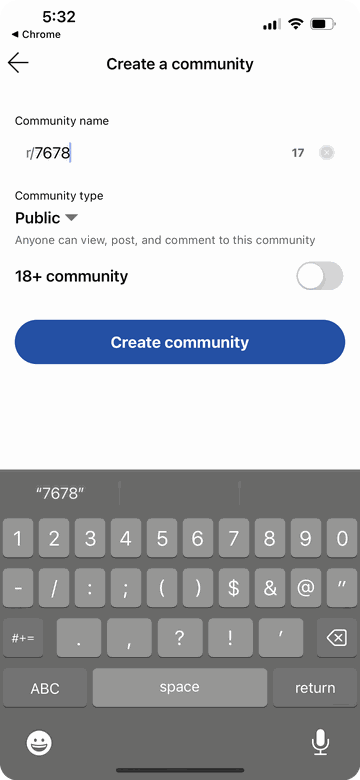
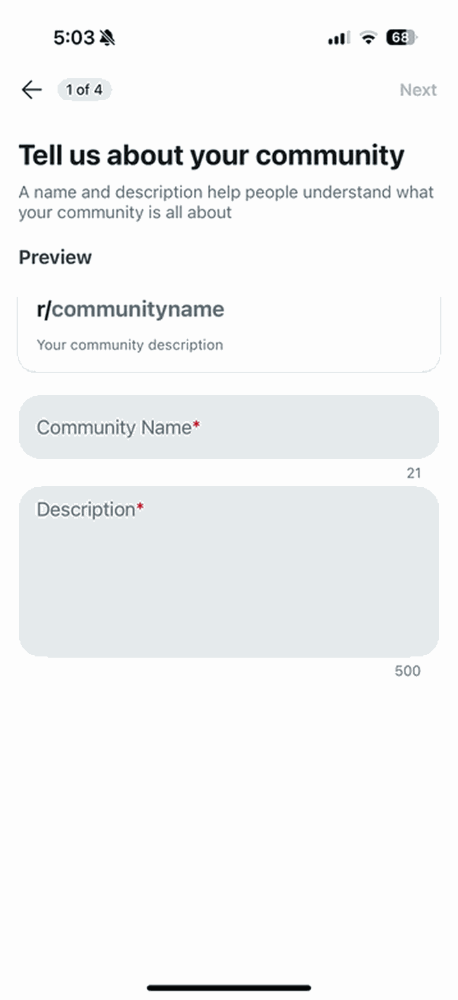
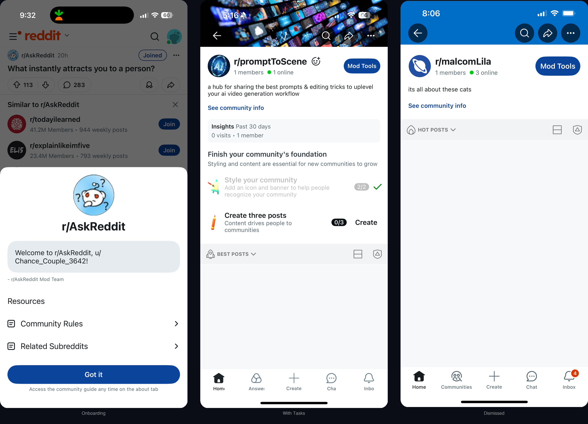
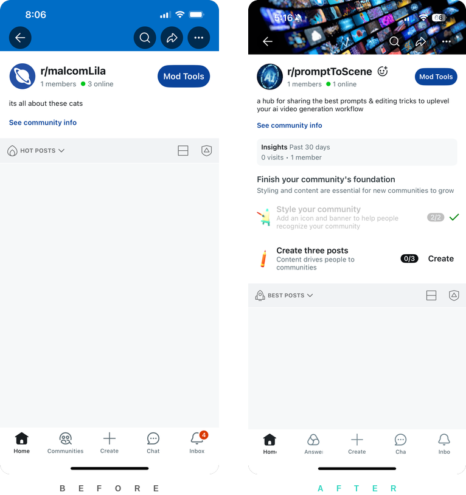
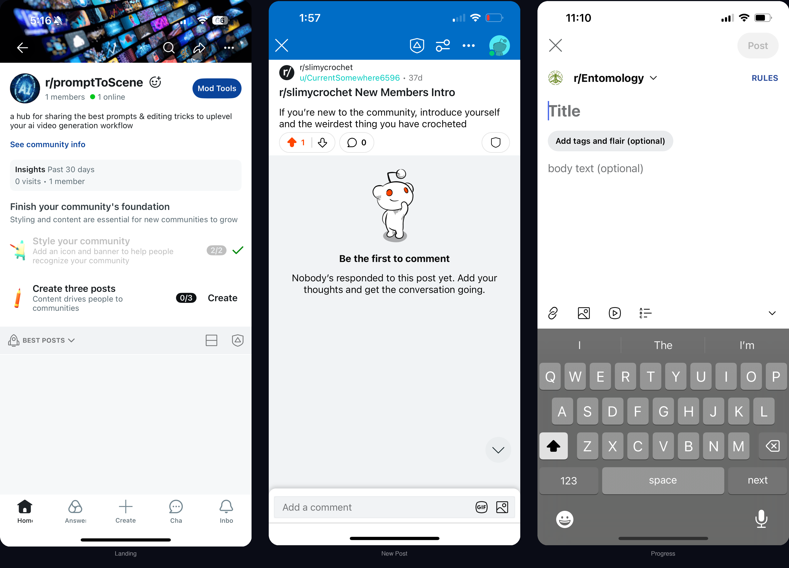

Subreddit Success
Reddit had invested heavily in large, established communities—but new subreddits had no product strategy, no tooling, and a 90% failure rate within 21 days. I joined a net-new team as the sole designer with no PM and no engineering lead. I synthesized cross-org research, built a lifecycle framework that became the team’s strategy and roadmap, shipped foundational features across creation and activation, then onboarded PM and EM and handed off a funded, staffed team.
Reddit’s new communities were failing silently. 90% of subreddits died within 21 days—no content, no members, no path forward. The platform had only ever invested in large, established communities—and with Reddit scaling from 101M to 121M daily active users, new community health was a direct growth lever. A siloed team of 3–4 people outside the product org manually launched about six subreddits per year. That was the entire strategy.
The Subreddit Success team was stood up to fix this. A director of product brought me in as the sole designer—no PM, no EM, 15–16 engineers already allocated and burning runway.
Raising the Floor on Creation
The existing creation flow collected a subreddit name and nothing else—the assumption being any friction would cause abandonment. The reality: low friction meant low intent. Creators launched communities with no visual identity, no description, no category—and no understanding of what it took to build an audience.
I restructured the flow to establish a minimum quality floor—name, category, avatar, and banner with inline cropping tools and live preview. The tradeoff was intentional: low-intent creators would drop off. We weren’t losing future successes—we were protecting users from an experience designed to disappoint.


Distribution was the other half. Reddit’s internal LLMs categorized every subreddit, but that process took 5–7 days—leaving new communities invisible to recommendations during the critical survival window. I added user-facing categorization in the creation flow as an intermediary signal, breaking a circular dependency: distribution needs categorization, content needs distribution, and the LLM needs content. The placeholder category got communities visible while the model caught up.

From Scattered Research to Shared Framework
Research about community success existed—scattered across UXR, data science, a siloed seed-content team, and product teams focused only on large subreddits. Moderators were entirely on their own—no guidance, no tooling, no structured path from creation to sustainability.
I built the milestone model—five stages of community growth, each with measurable survival thresholds: 3+ posts by day 7, 5–7 members by day 7, moderator teams (75% more successful than solo founders), and sustained activity at ~10 regular contributors. Calibrated from drop-off data, designed around progressive disclosure so moderators faced one challenge at a time.
Without a PM, I operated as the connective tissue across 15–16 engineers. Alignment happened through artifacts—shared documents where the research, data, and prioritization logic were visible before meetings, not debated during them. When engineers pushed back on calendar-day thresholds, arguing milestone-based measurement would be more precise, days won on data comparability—and the framework was built to incorporate milestones later. Engineers also sharpened my specs: their edge-case rigor meant every flow needed defined behavior for every path, and the product was tighter for it.
Making the Lifecycle Tangible
The milestone model was strategy. The community landing page made it real. Before, a new moderator landed on a chaotic page—six or seven cards in a horizontal carousel, off-platform Wiki links, blank post composers with no context. No progress tracking, no structured path.
I replaced this with an on-platform progressive disclosure checklist—tasks ordered by lifecycle stage, mapping directly to survival thresholds. Every action stayed on Reddit. The checklist also gave us instrumentation—exactly where creators stalled, visible in real time. A guided growth marketing campaign for every subreddit creator—step-by-step tools to launch, seed, distribute, and sustain a community.

The Result
Communities reaching 3+ posts by day 7 improved by ~7 percentage points against a baseline where the vast majority failed within that window. The creation quality floor and categorization signal got communities visible; the lifecycle checklist kept them moving. Engagement in i18n communities improved by ~2%, validating the framework beyond English-language subreddits.
The milestone model became a governance framework—teams across PDP, feeds, profile, contribution, and onboarding couldn’t propose features without identifying which stage they addressed. I shaped evaluation criteria for PM and EM hiring, onboarded both roles, and mentored a junior designer who extended the progressive disclosure pattern into welcome messages, moderator onboarding, and recruitment tooling that added 5.5K net new moderators to the platform.
